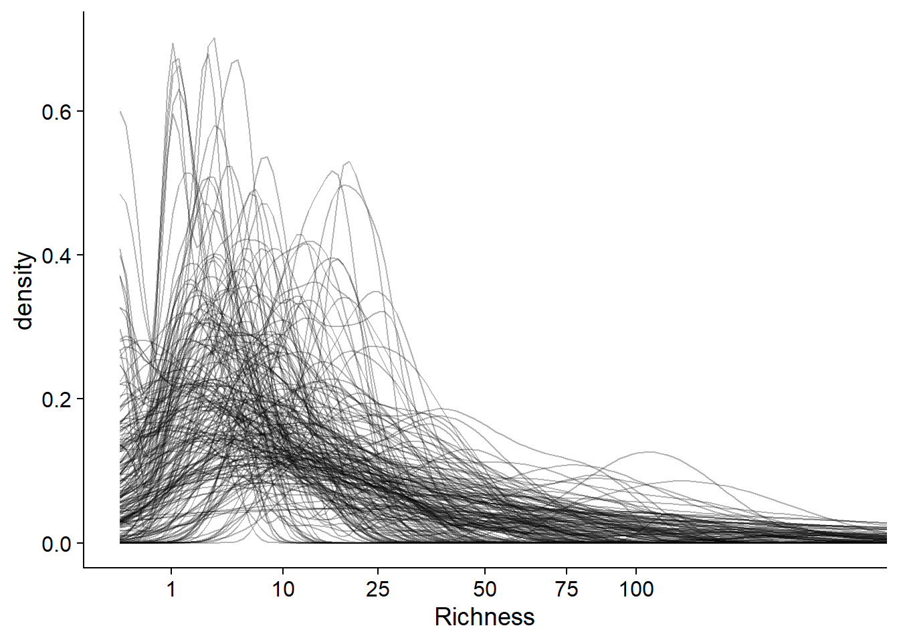
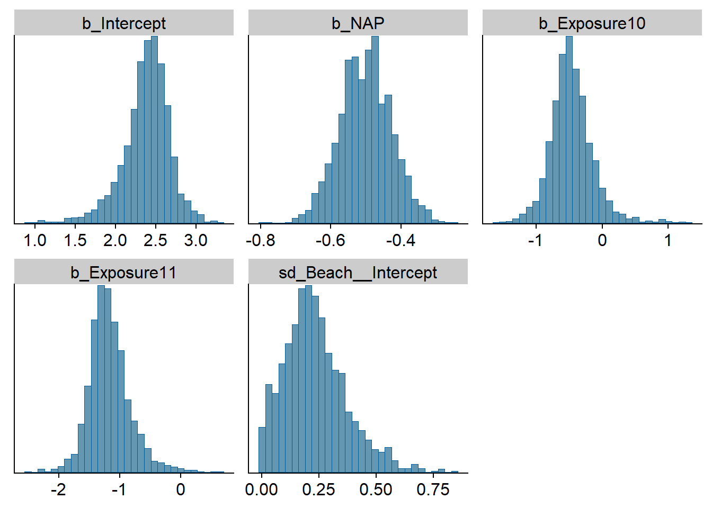
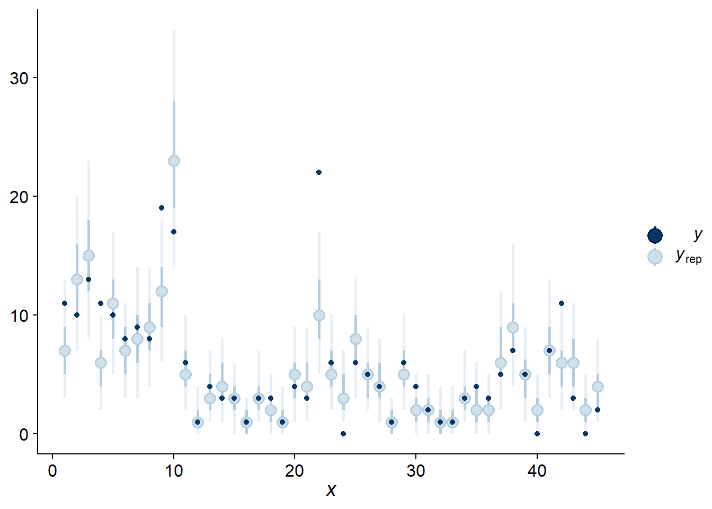
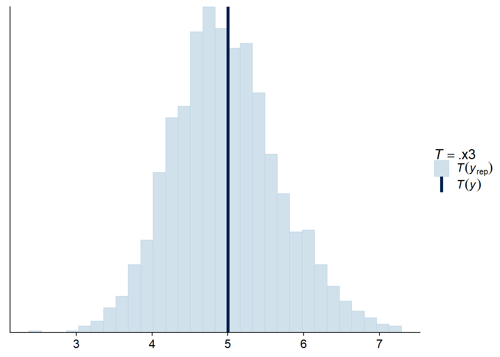
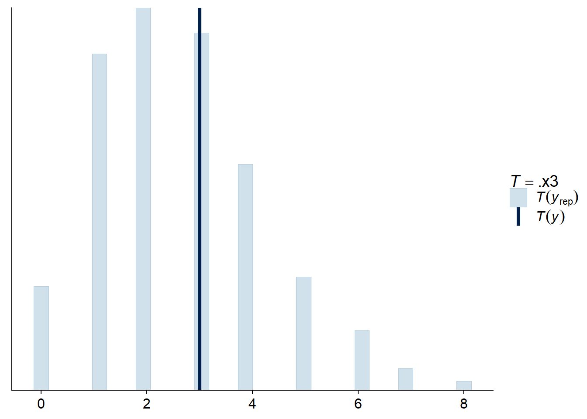
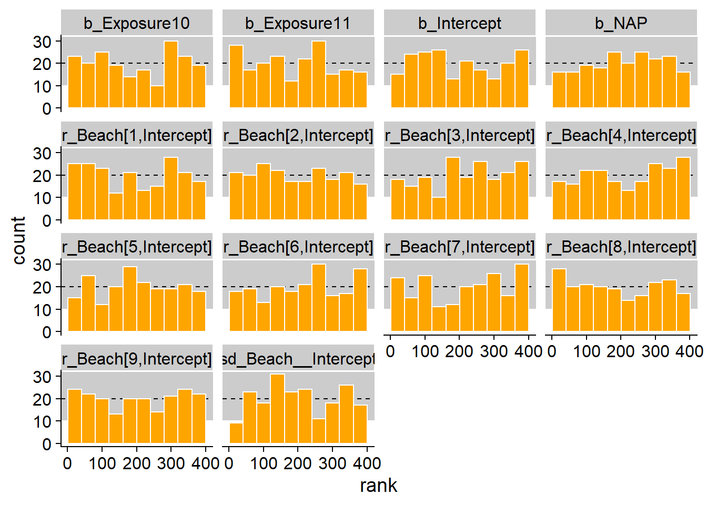
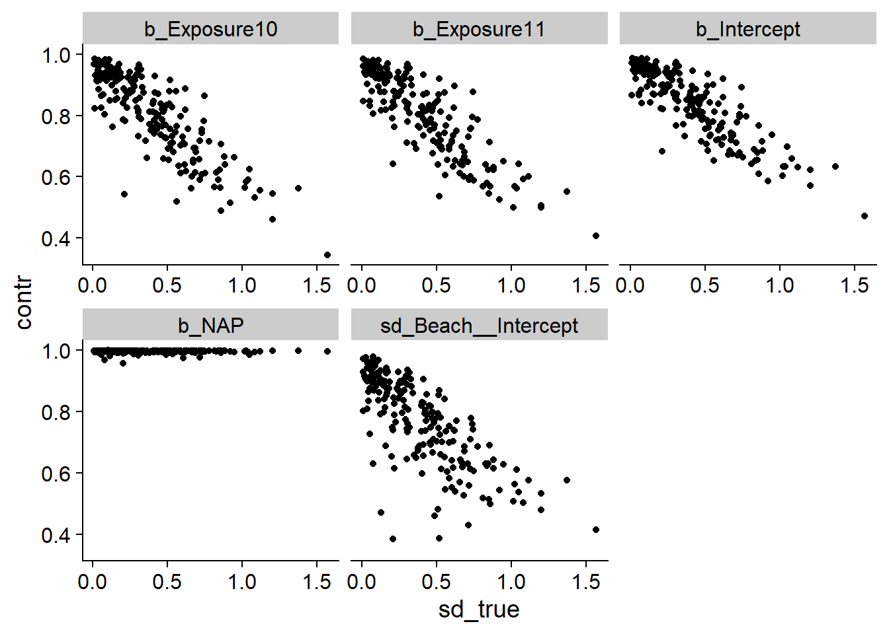

Hierarchical Bayesian models
Introduction
Today’s course first covers Markov chain Monte-Carlo methods, a family of algorithms for applying Bayesian inference to complex models. We will specifically talk about the Stan platform, which has some unique advantages over other software due to its implementation of the Hamiltonian Monte-Carlo algorithm. We will then present a protocol for the development of hierarchical Bayesian models.
Contents
Markov chain Monte-Carlo methods
Stan platform for Bayesian inference
Steps for developing a hierarchical Bayesian model
Markov chain Monte-Carlo methods
In the previous class, we saw the application of Bayes’ theorem to estimate the posterior distribution of the parameters \(\theta\) of a model according to the observations \(y\).
\[p(\theta | y) = \frac{p(y | \theta) p(\theta)}{p(y)}\]
In this equation, \(p(\theta)\) is the prior probability distribution of \(\theta\) (representing their uncertainty before observing the data), while \(p(y | \theta)\) is the probability of observations \(y\) conditional on a value of \(\theta\), that is, the likelihood function.
With several parameters, \(\theta\) is a vector, so the resulting posterior distribution is the joint distribution of \(\theta\) as a function of the data. It is important to consider this joint distribution, as the most likely values for one parameter may depend on the value of the other parameters.
In the above equation, the denominator \(p(y)\) is the marginal probability of the data. Since it does not depend on \(\theta\), this probability can be seen as a normalization constant necessary for the integral of the posterior probability distribution to be equal to 1.
We have also seen that \(p(y)\) corresponds to the integral of the numerator \(p(y | \theta) p(\theta)\) for all possible values of \(\theta\). Except in simple cases, we cannot exactly calculate this integral to obtain a mathematical formula of \(p(\theta | y)\).
To solve this problem, we will use Monte-Carlo methods. As we saw in the first class of the semester, these are methods for approximating a distribution by drawing samples from this distribution.
It does not seem possible to draw samples from the distribution \(p(\theta | y)\) if we do not know \(p(y)\). However, since \(p(y)\) does not depend on \(\theta\), it is possible to calculate the ratio of the posterior probabilities of two vectors \(\theta\):
\[\frac{p(\theta_{(2)} | y)}{p(\theta_{(1)} | y)} = \frac{p(y | \theta_{(2)}) p(\theta_{(2)})}{p(y | \theta_{(1)}) p(\theta_{(1)})}\] Note: Here, we use indices in parentheses to represent different \(\theta\) vectors, in order to avoid confusion with the different elements of a single vector, e.g. if \(\theta\) is a vector of \(m\) parameters, \(\theta_{(1)} = (\theta_{1(1)}, \theta_{2(1)}, ... \theta_{m(1)})\).
Metropolis-Hastings algorithm
The Metropolis-Hastings algorithm makes it possible to generate a sample of the distribution \(p(\theta | y)\) from these probability ratios. Here is a summary of how this method works.
First, we randomly choose a first vector of parameters \(\theta_{(1)}\).
Next, we choose a second vector \(\theta_{(2)}\), which depends on \(\theta_{(1)}\) according to some transition probability. For example, adding to each of the parameters in \(\theta_{(1)}\) an amount drawn from a normal distribution.
We compute the posterior probability ratio $ $.
If the ratio is greater than or equal to 1 (\(\theta_{(2)}\) is more likely than \(\theta_{(1)}\)), we accept \(\theta_{(2)}\).
If the ratio is less than 1, we accept \(\theta_{(2)}\) with a probability equal to this ratio; otherwise, we stay at the same point so \(\theta_{(2)} = \theta_{(1)}\).
Steps 2 and 3 are repeated for the desired number of iterations.
It has been shown that with enough iterations, the distribution of \(\theta_{(i)}\) can become as close as desired to the distribution sought: \(p(\theta | y)\). This theoretical result in fact depends on certain conditions; however, we will not discuss these details here, as we are concerned not with whether the algorithm eventually converges, but whether it converges quickly enough to be useful in practice. This depends on the problem and it will be necessary to determine the convergence empirically by inspecting the algorithm output, as we will see later.
Markov chains
In the Metropolis-Hastings algorithm, each vector \(\theta_{(i + 1)}\) is a random vector which depends on \(\theta_{(i)}\). In probability theory, this type of sequence is called a Markov chain. This algorithm is therefore the basis of Markov chain Monte-Carlo methods (abbreviated MCMC).
To illustrate the progression of a Markov chain, take the example below which represents the joint distribution of two parameters \(\theta_1\) and \(\theta_2\); the darker regions represent a higher probability density. Note that the two distributions are correlated: the larger \(\theta_1\) is, the more likely it is that \(\theta_2\) is small and vice versa.

In the graph below, the green and purple arrows represent two Markov chains initialized at different random positions. Although the transitions are random, the probability of accepting a transition is greater when the posterior probability density is higher, so the chains gradually approach the main part of the distribution.

After this initial period, the two chains explore the distribution and the probability that each point \((\theta_1, \theta_2)\) is visited by a chain is proportional to its posterior probability density.

Let’s now consider the sequence of values for one parameter \(\theta\) visited by three Markov chains, as presented in the graph below (called a trace plot).

At the start, the chains must start from their respective initial points and approach the main part of the distribution. This is called the “burn-in” or “warmup” period. The parameter values during that period are not used for inference. After the dotted line, we see that the chains have converged and mixed. This is the sampling period that will be used to approximate the posterior distribution of the parameter.
Verification of the convergence of the chains
As we saw above, the inspection of the trace plot can tell us if different Markov chains have converged, which means that their values can be used to estimate the posterior distribution.
To assess the convergence more quantitatively, we can use the Gelman-Rubin statistic \(\hat{R}\). This statistic represents the variance of a parameter between the chains relative to the variance of the parameter within each chain. This statistic is conceptually similar to an ANOVA: if the chains explore the same distribution, then the level of variation between values from the same chain is similar to the variation between values from different chains.
At convergence, \(\hat{R}\) must be around 1. There is no definitive threshold for this value, but most authors agree that \(\hat{R}\) should not exceed 1.1. However, \(\hat{R} \leq 1.1\) does not guarantee convergence towards the correct distribution; we will see later other diagnostics aiming to confirm that the algorithm is fully exploring the posterior distribution.
In the event of a convergence problem, we can extend the warmup period. If convergence is much too slow or if each chain remains “caught” in a part of the distribution rather than mixing with the other chains, this could indicate a difficulty in estimating the parameters of the model with the data provided. In this case, it would be useful to reparametrize or modify the model.
Sampling efficiency
If the algorithm converges, we can quantify the efficiency with which the Markov chains approximate the posterior distribution.
Let us consider a function \(f\) calculated from the parameters of the model. It can be the mean of the parameter, a quantile, or any statistic of interest which depends on one or more parameters of the model. If we had a sample of \(N\) independent random draws of the joint posterior distribution of the parameters, then the value of \(f\) calculated from this sample would approach its value for the exact distribution, with an approximation error (Monte-Carlo standard error, or MCSE) proportional to \(1 / \sqrt{N}\).
Note: One should not confuse the Monte-Carlo standard error with the standard deviation of the posterior distribution of the parameter. The standard deviation of the posterior distribution (similar to the standard error for a frequentist estimator) represents uncertainty about the value of the parameter and depends (among other things) on the number of observations. The Monte-Carlo standard error is the numerical approximation error of the algorithm. By increasing the number of iterations, we can estimate more precisely all the properties of the posterior distribution, including its standard deviation, but we cannot reduce this standard deviation without having more data. We had the same situation in the case of the bootstrap: we could increase the number of bootstrap samples to reduce the numerical approximation error, but not the uncertainty due to the limited data.
However, the Markov chain does not produce independent draws, since the value of \(\theta_{(i + 1)}\) is conditional on \(\theta_{i}\). In this case, the successive values of the chain are correlated, so \(N\) iterations are not equivalent to a sample of \(N\) independent values.
Bayesian inference software calculates the Monte-Carlo standard error and the effective sample size, \(N_{eff}\), which is the number of independent draws necessary to have the same precision as the \(N\) correlated iterations. In general, \(N_{eff}\) is less than the number of iterations, but this is not always the case, in particular for more efficient algorithms like the Hamiltonian Monte-Carlo algorithm seen in the following section.
Stan platform for Bayesian inference
Stan (https://mc-stan.org) is both a language to specify statistical models (as we saw during the previous lab) and a software implementing various inferential algorithms for those models. Released in 2015, it is among the more recent Bayesian inference software.
Carpenter, B. et al. (2017) Stan: A Probabilistic Programming Language. Journal of Statistical Software 76(1). 10.18637/jss.v076.i01. Models coded in Stan language are compiled in C ++ code in order to obtain a good speed of execution.
While Stan is a standalone software, there are packages in R (rstan) and Python allowing to interface with Stan. Also, there are several R packages that offer more options for using Stan:
brms and rstanarm automatically translate models specified in R into the Stan language;
bayesplot and shinystan produce visualizations of the results of the models, as we will see later;
loo implements a model comparison and multi-model prediction method based on the approximation of the cross-validation error;
tidybayes offers other viewing options, in particular for posterior distributions of parameters.
Hamiltonian Monte-Carlo method
The MCMC algorithm implemented by Stan is the Hamiltonian Monte-Carlo (HMC) method. One specific feature of this method is that it evaluates not only the value of \(p(y | \theta) p(\theta)\) at each iteration, but also its gradient, which is the equivalent of the “slope” of a surface in several dimensions. Thus, the algorithm knows in which direction the posterior probability is increasing, which makes it possible to converge more quickly towards the part of the distribution containing most of the probability.
In addition, each iteration of this algorithm is made up of several steps and follows a “curve” in the parameter space which is guided by the shape of the probability distribution. This allows successive points in the chain to be more spaced apart than in the case of traditional MCMC methods, which means that these points are more independent and that the effective sample size \(N_{eff}\) is larger for a same number of iterations.
In addition to these performance advantages, the Hamiltonian algorithm offers unique diagnostics, such as the presence of divergent transitions, which make it possible to check its validity.
The following article presents more details on the Hamiltonian Monte-Carlo method in an ecological modeling context.
Monnahan, C.C., Thorson, J.T. et Branch, T.A. (2017) Faster estimation of Bayesian models in ecology using Hamiltonian Monte Carlo. Methods in Ecology and Evolution 8: 339-348.
Diagnostics in Stan
Divergent transitions
The divergent transitions indicate that the algorithm has difficulty exploring a region of the posterior probability distribution, generally due to an abrupt change in the form of this distribution. This is the most serious diagnostic error, since even a small number of divergences compromise the validity of the results of the algorithm.
One of the ways to eliminate divergent transitions is to force the algorithm to take smaller steps, by increasing the adapt_delta parameter adjustable in Stan. However, in a case where the divergences persist, it may be necessary to reparametrize the model.
Maximum tree depth
The Hamiltonian algorithm evaluates different possible trajectories (represented by a tree) to choose the value of the parameters at the next iteration. When the maximum tree depth is reached, this means that the algorithm has tried the maximum number of trajectories, but that a longer trajectory remains possible. Unlike divergent transitions, this warning does not invalidate the results, but it can indicate a suboptimal parameterization.
You can increase the maximum depth with the max_treedepth argument, but this increases the time taken for each iteration.
Energy (BFMI low)
As with the divergences, this warning indicates that the algorithm does not traverse the posterior distribution efficiently. This problem can sometimes be resolved by extending the warmup period. However, if it occurs at the same time as one of the previous ones, the formulation of the model should probably be reviewed.
Options for using Stan from R
To conclude this section, we will see different ways to use Stan from R. First, we can write a Stan program, as we will see in the next lab. Here is the beginning of the Stan code for a simple model, where there are \(N\) observations of a response variable \(y\) and a predictor \(x\).
data {
int N;
vector[N] y;
vector[N] x;
}
[...]
To estimate the parameters of this model from data present in a data frame df containing thex and y columns, we must first create a list associating the data with each variable of the data block in the Stan program.
dat <- list(N = nrow(df), y = df$y, x = df$x)Then, we call the stan_model function to compile the model, then sampling to estimate the posterior distribution of the parameters from the data.
library(rstan)
mod <- stan_model("model.stan")
result <- sampling(mod, data = dat)In the previous class, we briefly presented the brms package, which allows us to represent models with a formula similar to the functions already seen in the course (lm,glm, lmer, etc.), then automatically translates them into Stan language to estimate the parameters in a Bayesian framework. The brm function is used for all types of models supported by the package (generalized linear models, mixed effect models, temporal and spatial dependence, etc.)
library(brms)
res_brms <- brm(y ~ x, data = df)The rstanarm package is an alternative to brms. Rather than using a single function, this package contains functions specialized for each model type (e.g. stan_lm, stan_glm, stan_lmer).
library(rstanarm)
res_arm <- stan_lm(y ~ x, data = df)This package has slightly fewer options than brms, but its main advantage is that the Stan programs used are pre-compiled. The compilation time is generally only a few minutes for a new model, but this time saving can be useful when it is necessary to evaluate successively many different models.
The two packages rstanarm and brms make it possible to estimate the parameters of frequently-used model types without worrying about programming in the Stan language and specifically optimizing the formulation of the model to facilitate efficient sampling. Their use is therefore recommended, except when a custom model is required which must be coded in Stan.
Steps for developing a hierarchical Bayesian model
This part presents the steps of a suggested protocol for the development and validation of a hierarchical Bayesian model.
The protocol is based on the article:
Betancourt, M. (2020) Towards A Principled Bayesian Workflow. https://betanalpha.github.io/assets/case_studies/principled_bayesian_workflow.html.
Michael Betancourt is one of Stan’s developers and his website contains several articles on the theory related to hierarchical Bayesian models, as well as case studies on their application to different problems.
Here are the main steps to follow when developing a new hierarchical Bayesian model to represent a given system.
Formulate the model.
Check the prior predictions.
Test the fit of the model to simulated data.
Fit the model to actual data and check the diagnostics.
Check the posterior predictions.
Note that before step 4, we check the internal consistency of the model, then in steps 4 and 5 we check if it adequately represents the observed data.
Model formulation
First, we must describe the variables of the model and their mathematical relationships, as well as the statistical distributions assigned to the response variables. It is particularly important to consider the structure of the sampling or experimental design in order to specify the hierarchy of random effects.
It is also at this stage that we choose the prior distributions for the parameters.
Prior predictive checks
To check whether the prior distributions of the predictors generate realistic values of the observations, we start by generating parameter vectors from their prior distribution, then we simulate a data set similar to that observed from the model based on each vector of parameters. This simulation uses the actual values of the predictors for each observation.
From the results of the simulations, we check whether the properties of the simulated observations correspond to realistic values for the problem. At this stage, we do not directly compare the simulations to actual observations, only to our prior knowledge of what constitutes a reasonable value of the response.
Fit of the model to simulated data
For this step, we fit the model to each dataset simulated in the previous step. These datasets contain the actual values of the predictors, but the response is simulated using known parameters taken from the prior distribution.
Next, we check the fitting diagnostics for each simulation, then we check the accuracy of the model inferences by comparing the posterior distributions to the parameter values used for each simulation. Since the data were obtained by simulation, we expect the inference to produce estimates compatible with the known values of the parameters. Two tests are useful at this point:
Calibration test: Are the posterior probability intervals correct?
Sensitivity test: Does the data allow us to determine the value of the parameter?
Since Bayesian inference must be repeated several times, this part of the protocol is very costly in terms of computation time. Thus, it is not necessary to perform it for each model, especially if it is a type of model that is already well known.
Calibration by simulation
Suppose we have observations \(y\) simulated from the model with a parameter value \(\theta\) drawn from the prior distribution. By fitting the model to these \(y\), we obtain a sample of the posterior distribution of \(\theta\), that is \(\theta_{(i)}\) for \(i\) from 1 to \(N\) iterations .
If the inference is correct, the rank of \(\theta\) among the \(\theta_{(i)}\) is distributed uniformly between 1 and \(N + 1\). This is equivalent to saying that if an interval contains a certain fraction (say 90%) of the posterior probability of \(\theta\), the true value of the parameter is included in that invertal this same fraction of time. (This coverage property is analogous to that of frequentist confidence intervals.) In particular, if \(\theta\) is more often at the extreme ranks than expected, this would mean that the posterior distribution underestimates the uncertainty on \(\theta\). On the contrary, if \(\theta\) is always at the center, it would mean that its uncertainty is overestimated.
The calibration test therefore aims to verify that over a large number of simulations, the rank of the true value of \(\theta\) among the \(\theta_{(i)}\) is uniformly distributed.
Talts, S. et al. (2018) Validating Bayesian inference algorithms with simulation-based calibration. arXiv:1804.06788.
Sensitivity
If the model is well calibrated, the sensitivity test aims to determine whether, based on the amount of data available, it is possible to accurately estimate the value of each parameter.
The \(z\)-score is the standardized difference between the estimated posterior value and the real value of the parameter.
\(\frac{\bar{\theta}_{post} - \theta}{\sigma_{post}}\)
In other words, this statistic gives the difference between the estimated value and the real value of the parameter, in standard deviation units of the posterior distribution. This value should generally be near zero; for example, if the posterior distribution of the parameter is normal, for 95% of simulations the value of this score will be between -2 and 2.
The shrinkage represents the reduction of the variance compared to the prior distribution:
\(1 - \frac{\sigma^2_{post}}{\sigma^2_{prior}}\)
In general, we expect the posterior variance to be smaller than that the prior variance. For example, if the posterior variance is 10 times smaller than the prior variance, the contraction is 90%.
Note that this term does not have the same meaning here as that seen earlier in the context of mixed models, where it designates the shrinkage of random effects towards the general mean.
Fit to real data
Once the internal consistency of the model has been verified, we can now fit the model to the actual data, check the diagnoses (divergences, tree depth, energy), then refit the model if necessary by modifying the parameters of the algorithm.
If no problem is detected, we can consult the summary of estimates and view the posterior distributions of the parameters.
Posterior predictive checks
In this last step, we want to verify that the predictions obtained by simulating observations from the posterior distribution of the parameters are sufficiently close to the observations.
As seen at the end of the last class, we can check if enough observations are within their prediction interval according to the fitted model. Also, we can compare predictions and observations using summary statistics describing important characteristics of the data set that are not directly fit by the model.
Detailed example: Bayesian GLMM with brms
For this example, we use the rikz dataset from the textbook by Zuur et al., Mixed Effects Models and Extensions in Ecology with R. We used the same data in week 5 for generalized linear mixed models.
The rikz dataset contains measurements of benthic species richness for 45 sites on 9 beaches (Beach) in the Netherlands, and two predictors: the vertical position of the site (NAP) and the beach exposure index (Exposure). Since the latter only takes three different values (8, 10 and 11), we will treat it as a factor.
rikz <- read.csv("../donnees/rikz.csv")
# Convert Beach and Exposure to factors (categorical variables)
rikz <- mutate(rikz, Beach = as.factor(Beach),
Exposure = as.factor(Exposure))
head(rikz)## Sample Richness Exposure NAP Beach
## 1 1 11 10 0.045 1
## 2 2 10 10 -1.036 1
## 3 3 13 10 -1.336 1
## 4 4 11 10 0.616 1
## 5 5 10 10 -0.684 1
## 6 6 8 8 1.190 2Here are the packages we will need for this example.
library(brms)
library(dplyr)
library(tidyr)
library(ggplot2)
library(cowplot)
theme_set(theme_cowplot())Model formulation
As we did in week 5, we model this data using Poisson regression, with a random effect of the beach on the intercept. Here is the mathematical representation of this model, where we have chosen parameter names that are close to those given by brms:
Richness ~ poisson(lambda)
log(lambda) = b_Intercept + r_Beach + b_NAP * NAP + b_Exposure10 * Exposure10 + b_Exposure * Exposure11
r_Beach ~ normal(0, sd_Beach)- the species richness follows a Poisson distribution with mean
lambda; log(lambda)is given by a linear function of the NAP and the exposure index, with a mean intercept (b_Intercept) and a random effect for each beach around this mean (r_Beach);- the beach random effects are normally distributed with a standard deviation
sd_Beach.
The above formula is based on the default coding of factors in R, with Exposure = 8 as the reference level. Exposure10 and Exposure11 take a value of 1 when the Exposure variable is 10 or 11, respectively; thus, b_Exposure10 represents the difference in log(lambda) between levels 8 and 10 and b_Exposure11 represents the difference between levels 8 and 11.
We still have to choose the prior distribution for each parameter. Suppose we know that the species richness on this type of site can reach tens of species, but not hundreds. A normal(2, 1) distribution for the intercept means that we give 95% probability to values between 0 and 4 on the logarithmic scale, or between 1 and 55 after taking the exponential.
exp(c(0, 4))## [1] 1.00000 54.59815For the predictor coefficients, the normal(0, 1) distribution is a reasonable choice: we already assume that the logarithm of the number of species varies on a scale of a few units, which is also the case for the only numerical predictor (NAP).
summary(rikz$NAP)## Min. 1st Qu. Median Mean 3rd Qu. Max.
## -1.3360 -0.3750 0.1670 0.3477 1.1170 2.2550Finally, we need to specify a distribution for the standard deviation of the random effects of the beach. The normal(0, 1) distribution, which is actually half-normal because it is truncated to zero, may be too permissive here. A standard deviation of 2 would mean that the species richness would vary by a factor of $e^2 $7 from one beach to another. We therefore use normal(0, 0.5) instead.
Here is how to specify these prior distributions with brms:
rikz_prior <- c(set_prior("normal(0, 1)", class = "b"),
set_prior("normal(2, 1)", class = "Intercept"),
set_prior("normal(0, 0.5)", class = "sd"))The class of coefficients “b” represents a distribution that applies to all fixed coefficients except the intercept class. To specify the distribution of a single coefficient in a class, the argument coef must be specified in addition to class. The “sd” class represents the prior distribution for standard deviations of random effects. Since brms knows that standard deviations are always greater than zero, we do not need to specify the lower bound with lb here.
Prior predictive checks
We first call the function brm with the argument sample_prior = "only" to obtain a sample of the prior distribution of the parameters of a model.
res_prior <- brm(Richness ~ NAP + Exposure + (1 | Beach), data = rikz,
family = poisson, sample_prior = "only",
chains = 1, iter = 400, prior = rikz_prior)By default, brm estimates the posterior distribution with 4 chains and 2000 iterations per chain, with 50% of these iterations constituting the warmup period. Here, we specify a single chain and 400 iterations, so there are 200 warmup iterations and 200 for sampling.
The function posterior_samples usually returns an array of values taken from the posterior distribution of the parameters, but here it is the prior distribution because of the argument sample_prior.
prior_params <- posterior_samples(res_prior)
str(prior_params)## 'data.frame': 200 obs. of 15 variables:
## $ b_Intercept : num 1.113 3.499 2.153 0.136 3.622 ...
## $ b_NAP : num -0.0686 -0.6141 -1.234 -0.2929 0.4807 ...
## $ b_Exposure10 : num -0.441 -0.406 -0.473 0.321 -0.639 ...
## $ b_Exposure11 : num 0.265 -0.257 0.138 2.156 -1.629 ...
## $ sd_Beach__Intercept : num 0.3018 0.0763 0.0478 0.3042 0.7093 ...
## $ r_Beach[1,Intercept]: num 0.3419 -0.0968 -0.0536 0.0275 -0.0424 ...
## $ r_Beach[2,Intercept]: num -0.32867 -0.00337 0.05592 -0.01466 0.04736 ...
## $ r_Beach[3,Intercept]: num -0.1363 0.0619 0.024 0.1615 -0.7123 ...
## $ r_Beach[4,Intercept]: num 0.6445 -0.1244 -0.0595 -0.3911 0.8905 ...
## $ r_Beach[5,Intercept]: num -0.31044 0.00526 0.0078 0.23129 -0.6946 ...
## $ r_Beach[6,Intercept]: num -0.1426 0.0228 0.0352 0.5641 0.0794 ...
## $ r_Beach[7,Intercept]: num 0.0378 -0.0767 -0.0131 0.3138 -0.7143 ...
## $ r_Beach[8,Intercept]: num -0.27338 -0.02351 0.00226 0.15147 -0.14758 ...
## $ r_Beach[9,Intercept]: num -0.1703 -0.1018 -0.0316 -0.3655 1.0734 ...
## $ lp__ : num -18.3 -18.8 -18.2 -20 -18.2 ...Each row represents one iteration of the sampling period. In this case, Stan is simply drawing values for each parameter from their prior distribution. Parameters with names beginning with b represent the fixed effects, sd_Beach__Intercept is the standard deviation of the random effects of the beach on the intercept, and then parameters with names beginning with r are the random effects; these are drawn from the distribution defined by sd_Beach__Intercept. The last parameter, lp__, represents the log of the joint probability of the parameters.
We add to this dataset a column identifying the simulation (from 1 to 200):
prior_params$sim_id <- as.character(1:200)The posterior_predict function generates a simulation of the response variable according to the value of the parameters at each iteration and the predictors of the dataset.
Despite the name, this function is closer to the simulate function for classical models in R, rather than predict. As seen in the previous lab, posterior_epred provides the predictions of the mean response at each iteration.
The result is a matrix with one row for each of the 200 iterations of the prior distribution and one column for each of the 45 observations of the original dataset (in the same order as the 45 rows of the original dataset).
prior_pred <- posterior_predict(res_prior)
str(prior_pred)## int [1:200, 1:45] 2 23 5 0 21 0 94 3 30 75 ...
## - attr(*, "dimnames")=List of 2
## ..$ : NULL
## ..$ : NULLIn order to visualize these predictions, we add a column to identify the simulation and we perform a pivot to get 3 columns: sim_id, obs_id and Richness.
prior_df <- data.frame(prior_pred)
prior_df$sim_id <- 1:200
prior_df <- pivot_longer(prior_df, cols = -sim_id,
names_to = "obs_id", values_to = "Richness")
head(prior_df)## # A tibble: 6 x 3
## sim_id obs_id Richness
## <int> <chr> <int>
## 1 1 X1 2
## 2 1 X2 6
## 3 1 X3 3
## 4 1 X4 1
## 5 1 X5 3
## 6 1 X6 3summary(prior_df$Richness)## Min. 1st Qu. Median Mean 3rd Qu. Max.
## 0.00 2.00 8.00 25.18 20.00 3338.00The maximum simulated value is very high (3458 species), which frequently occurs when the response follows an exponential function of the predictors. However, the vast majority of simulated values are less than 100.
mean(prior_df$Richness < 100)## [1] 0.9586667Here is a way to visualize the distribution of the species richness for each prior simulation of the model. We create a probability density curve (with stat_density) for each simulation (group = sim_id), with a transparency level alpha = 0.3 to see the superimposed curves. We apply a square root transformation to the x axis to see more of the data (a log transformation is impossible because of the presence of zeros), then we limit this axis to values between 0 and 200.
ggplot(prior_df, aes(x = Richness)) +
stat_density(aes(group = sim_id), position = "identity", geom = "line", alpha = 0.3) +
scale_x_sqrt(breaks = c(0, 1, 10, 25, 50, 75, 100)) +
coord_cartesian(xlim = c(0, 200))
Most simulations give a low probability to richness values > 100, consistent with the prior knowledge of the system.
As mentioned above, step 3 of the full protocol (fitting the model to the simulated data) takes a lot of time, so it is often omitted, especially for a “standard” model such as a GLMM. Nevertheless, I have included the code to perform this step as a supplement at the end of these notes.
Fitting the model to observations
We are now ready to fit the model to the actual observations.
res_br <- brm(Richness ~ NAP + Exposure + (1 | Beach), data = rikz,
family = poisson, control = list(adapt_delta = 0.99),
chains = 2, prior = rikz_prior)summary(res_br)## Family: poisson
## Links: mu = log
## Formula: Richness ~ NAP + Exposure + (1 | Beach)
## Data: rikz (Number of observations: 45)
## Samples: 2 chains, each with iter = 2000; warmup = 1000; thin = 1;
## total post-warmup samples = 2000
##
## Group-Level Effects:
## ~Beach (Number of levels: 9)
## Estimate Est.Error l-95% CI u-95% CI Rhat Bulk_ESS Tail_ESS
## sd(Intercept) 0.23 0.14 0.02 0.55 1.00 433 439
##
## Population-Level Effects:
## Estimate Est.Error l-95% CI u-95% CI Rhat Bulk_ESS Tail_ESS
## Intercept 2.38 0.29 1.69 2.90 1.00 933 652
## NAP -0.50 0.07 -0.65 -0.36 1.00 2032 1386
## Exposure10 -0.47 0.33 -1.06 0.26 1.00 878 631
## Exposure11 -1.17 0.34 -1.76 -0.38 1.01 827 663
##
## Samples were drawn using sampling(NUTS). For each parameter, Bulk_ESS
## and Tail_ESS are effective sample size measures, and Rhat is the potential
## scale reduction factor on split chains (at convergence, Rhat = 1).The summary of the results indicates first the model formula, then the parameters of the algorithm (number of chains and iterations, number of warmup iterations). The Group-Level Effects section shows the standard deviation of random effects, while the Population-Level Effects section shows the fixed effects. Each estimate shows the mean, standard deviation, and a 95% credibility interval for the posterior distribution, as well as the Gelman-Rubin statistic (Rhat) and the effective Monte Carlo sample size (based on two measures, Bulk_ESS and Tail_ESS).
Comparing these results with those of the classical GLMM, we obtain differences between the mean estimates, but these differences are reasonable considering the margins of error of each parameter.
library(lme4)
res_glmm <- glmer(Richness ~ NAP +Exposure + (1 | Beach), data = rikz, family = poisson)
summary(res_glmm)## Generalized linear mixed model fit by maximum likelihood (Laplace
## Approximation) [glmerMod]
## Family: poisson ( log )
## Formula: Richness ~ NAP + Exposure + (1 | Beach)
## Data: rikz
##
## AIC BIC logLik deviance df.resid
## 210 219 -100 200 40
##
## Scaled residuals:
## Min 1Q Median 3Q Max
## -1.8080 -0.4947 -0.2078 0.2789 3.9801
##
## Random effects:
## Groups Name Variance Std.Dev.
## Beach (Intercept) 0.01138 0.1067
## Number of obs: 45, groups: Beach, 9
##
## Fixed effects:
## Estimate Std. Error z value Pr(>|z|)
## (Intercept) 2.52472 0.16720 15.100 < 2e-16 ***
## NAP -0.50781 0.07128 -7.125 1.04e-12 ***
## Exposure10 -0.59863 0.19615 -3.052 0.00227 **
## Exposure11 -1.33491 0.21817 -6.119 9.43e-10 ***
## ---
## Signif. codes: 0 '***' 0.001 '**' 0.01 '*' 0.05 '.' 0.1 ' ' 1
##
## Correlation of Fixed Effects:
## (Intr) NAP Exps10
## NAP 0.078
## Exposure10 -0.847 -0.027
## Exposure11 -0.766 -0.063 0.653There are a few reasons why the estimates obtained by the Bayesian approach differ from those obtained by maximum likelihood, in particular:
the prior distribution can influence the inference if the number of observations is small;
even in the case where the prior distribution has little influence and the posterior distribution takes the same form as the likelihood function, the Bayesian estimate is the mean of the posterior distribution, which is not necessarily equal to the point of maximum probability, especially if the distribution is skewed.
The stanplot function allows the visualization of different model results, including the traceplot of the Markov chains, a histogram of the posterior distributions, or a representation of the different coefficients with their credibility intervals.
stanplot(res_br, type = "trace")## Warning: Method 'stanplot' is deprecated. Please use 'mcmc_plot' instead.## No divergences to plot.
stanplot(res_br, type = "hist")## Warning: Method 'stanplot' is deprecated. Please use 'mcmc_plot' instead.## `stat_bin()` using `bins = 30`. Pick better value with `binwidth`.
stanplot(res_br, type = "intervals")## Warning: Method 'stanplot' is deprecated. Please use 'mcmc_plot' instead.
Note that by default, the intervals in bold lines contain 50% of the posterior probability while those in thin lines contain 90% of this probability.
An interactive tool to visualize the results and diagnostics of the model can be launched with the launch_shinystan function.
launch_shinystan(res_br)Posterior predictive checks
As in the last course, we use pp_check with type = "intervals" to compare the observations to the model’s prediction intervals. On average, we expect 50% of the observations to be in the bold intervals and 90% in the lighter intervals.
pp_check(res_br, type = "intervals")## Using all posterior samples for ppc type 'intervals' by default.
For a Poisson regression, we can also check that the standard deviation of the observations and the number of zeros obtained are comparable to the values predicted by the fitted model.
pp_check(res_br, type = "stat", stat = sd)## Using all posterior samples for ppc type 'stat' by default.## `stat_bin()` using `bins = 30`. Pick better value with `binwidth`.
pp_check(res_br, type = "stat", stat = function(x) sum(x == 0))## Using all posterior samples for ppc type 'stat' by default.
## `stat_bin()` using `bins = 30`. Pick better value with `binwidth`.
Supplement: Fitting the model to simulated data
We had obtained above simulations of the response variable for each of the 200 values derived from the prior distribution of our parameter vector. We now wish to fit the model to each of these simulations in order to perform calibration and sensitivity tests.
The brms package includes a brm_multiple function that allows us to fit the same model to several datasets contained in a list. So we create a list of 200 replicates of the original dataset with replicate (simplify = FALSE is necessary to prevent R from trying to combine all 200 datasets into one), then we use a loop to replace the response column of each dataset with one of the rows of the prior prediction matrix.
rikz_repl <- replicate(200, rikz, simplify = FALSE)
for (i in 1:200) {
rikz_repl[[i]]$Richness <- prior_pred[i, ]
}Then we call the brm_multiple function with our model and this list of datasets. We reduce the number of Markov chains to 2 and specify the control parameter adapt_delpth = 0.99, because we had previously observed that the default value (adapt_delta = 0.8) generates several divergences. Finally, combine = FALSE ensures that brm_multiple produces a list of 200 objects for the results of each model, rather than combining them into a single object.
We did not specify the number of iterations per string, so brms uses 2000 iterations by default, including 1000 in the warmup period. With two chains, the sample of the posterior distribution will therefore contain 2000 values of each parameter by simulation.
res_test <- brm_multiple(Richness ~ NAP + Exposure + (1 | Beach),
data = rikz_repl, family = poisson,
chains = 2, control = list(adapt_delta = 0.99),
prior = rikz_prior, combine = FALSE)Fitting the 200 models takes some time, so in practice this part might require the use of a high-performance computing cluster.
We will now check how many models contain divergent transitions or have reached the maximum tree depth. The nuts_params function produces the diagnostic values for each iteration of a fitted model. Here, since we have a list of 200 results, we use lapply to apply this function to each element in the list: diags therefore contains a list of 200 data sets.
diags <- lapply(res_test, nuts_params)We can combine these datasets by stacking them with the bind_rows function of dplyr. The .id argument to this function creates a column (here sim_id) that identifies the original list item from which each row comes. Since the elements in the list have no names, this id here is the number between 1 and 200.
diags <- bind_rows(diags, .id = "sim_id")
head(diags)## sim_id Iteration Parameter Value Chain
## 1 1 1 accept_stat__ 0.9996518 1
## 2 1 2 accept_stat__ 0.9945361 1
## 3 1 3 accept_stat__ 0.9878070 1
## 4 1 4 accept_stat__ 0.9948456 1
## 5 1 5 accept_stat__ 0.9973272 1
## 6 1 6 accept_stat__ 0.9981608 1Instead of two columns indicating the parameter and its value, we would like one column per parameter, so we need to pivot the data with pivot_wider.
diags <- pivot_wider(diags, names_from = Parameter, values_from = Value)
head(diags)## # A tibble: 6 x 9
## sim_id Iteration Chain accept_stat__ stepsize__ treedepth__ n_leapfrog__
## <chr> <int> <int> <dbl> <dbl> <dbl> <dbl>
## 1 1 1 1 1.00 0.0746 5 63
## 2 1 2 1 0.995 0.0746 5 31
## 3 1 3 1 0.988 0.0746 5 31
## 4 1 4 1 0.995 0.0746 6 63
## 5 1 5 1 0.997 0.0746 6 63
## 6 1 6 1 0.998 0.0746 6 63
## # ... with 2 more variables: divergent__ <dbl>, energy__ <dbl>Each row indicates the number of the simulation, the chain and the iteration in that chain, as well as the values of six parameters of the algorithm. We are mainly interested in divergent__, which indicates whether the transition was divergent (1) or not (0), and then in the treedepth__. With summarize, we count the number of divergent transitions per simulation and the number of iterations having reached the maximum tree depth (which is 10 by default). We also attach to this result the prior_params table containing the parameters of each simulation in order to check if some parameter values are associated with the problems identified by the diagnostics.
diags <- group_by(diags, sim_id) %>%
summarize(div = sum(divergent__), maxtree = sum(treedepth__ == 10)) %>%
inner_join(prior_params)## `summarise()` ungrouping output (override with `.groups` argument)## Joining, by = "sim_id"Since these are not our real data, but simulations, we do not try to eliminate all problematic diagnoses, but rather to see generally if estimation is difficult for certain ranges of values of the prior parameter distributions.
When inspecting this dataset, we note that 2 simulations contain 1 or 2 divergent transitions (respectively), while about 10 simulations have sometimes reached the maximum tree depth. Simulations where many iterations reach the maximum depth seem to be characterized by a high intercept or standard deviation of the random effects, but otherwise there is no particular pattern to these results.
filter(diags, maxtree > 0 | div > 0) %>%
arrange(desc(div), desc(maxtree)) %>%
select(div, maxtree, b_Intercept, sd_Beach__Intercept)## # A tibble: 13 x 4
## div maxtree b_Intercept sd_Beach__Intercept
## <dbl> <int> <dbl> <dbl>
## 1 2 0 2.98 0.0807
## 2 1 0 2.90 0.0831
## 3 0 459 4.73 0.884
## 4 0 305 2.37 1.20
## 5 0 43 1.50 0.656
## 6 0 43 2.48 0.851
## 7 0 7 1.97 1.37
## 8 0 7 2.85 0.635
## 9 0 4 1.36 0.859
## 10 0 3 2.37 1.20
## 11 0 2 3.13 0.730
## 12 0 2 0.869 0.515
## 13 0 2 2.86 1.02Calibration test
For this test, we want to check whether the position of the true value of the parameter used for a simulation is uniformly distributed among the values obtained for the posterior distribution estimated from this simulation. For each result in our list, we can extract these posterior distributions with posterior_samples, which produces a data frame of 2000 iterations x 15 parameters (14 parameters plus the log of the joint probability).
test_params <- lapply(res_test, posterior_samples)However, the calibration test is based on an independent sample, so we subsample the results by taking one value every 5 iterations, for a total of 399 values between iterations 5 and 1995. As before, we combine the results of the 200 simulations with bind_rows by adding a column identifying the original simulation.
test_params <- lapply(res_test, function(x) posterior_samples(x)[seq(5, 1995, 5),])
test_params <- bind_rows(test_params, .id = "sim_id")We use bind_rows to combine these posterior distributions with the values of the parameters from the prior distribution that were used for the simulations, contained in the prior_params table. With id = "type", we create a column which indicates whether it is the true value of the parameter (prior) or a value from the posterior distribution (posterior). Finally, we apply a pivot to obtain 4 columns: the type of value, the simulation number, the parameter and its value.
test_params <- bind_rows(prior = prior_params, posterior = test_params, .id = "type")
test_params <- pivot_longer(test_params, cols = -c(sim_id, type),
names_to = "param", values_to = "value")
head(test_params)## # A tibble: 6 x 4
## type sim_id param value
## <chr> <chr> <chr> <dbl>
## 1 prior 1 b_Intercept 1.11
## 2 prior 1 b_NAP -0.0686
## 3 prior 1 b_Exposure10 -0.441
## 4 prior 1 b_Exposure11 0.265
## 5 prior 1 sd_Beach__Intercept 0.302
## 6 prior 1 r_Beach[1,Intercept] 0.342For each simulation and each parameter, test_params contains 400 values: the prior value of the parameter that was used to simulate the data, then 399 values of the posterior distribution.
We still have to group the values by simulation and parameter, determine the rank of the 400 values (with mutate), then keep only the ranks of the original values of the parameters (type == "prior"), which should be uniformly distributed between 1 and 400 if the model is well calibrated.
Note: We eliminate the lp__ column because log-probability is not a parameter of the model and is certainly not comparable between the prior and posterior distributions.
calib <- group_by(test_params, sim_id, param) %>%
mutate(rank = rank(value)) %>%
filter(type == "prior", param != "lp__") %>%
ungroup()
head(calib)## # A tibble: 6 x 5
## type sim_id param value rank
## <chr> <chr> <chr> <dbl> <dbl>
## 1 prior 1 b_Intercept 1.11 332
## 2 prior 1 b_NAP -0.0686 145
## 3 prior 1 b_Exposure10 -0.441 64
## 4 prior 1 b_Exposure11 0.265 42
## 5 prior 1 sd_Beach__Intercept 0.302 183
## 6 prior 1 r_Beach[1,Intercept] 0.342 366To test the uniformity of the ranks for each parameter, we group the ranks into 10 classes with a histogram: 1 to 40, 41 to 80, etc. (It is important to specify the limits of the classes manually with breaks.) In theory, the number of observations per class is given by a binomial distribution \(\text{Bin}(N = 200, p = 0.1)\), with a mean of 20 (dotted line) and for which 99% of the probability is in the grey zone.
ggplot(calib, aes(x = rank)) +
geom_rect(ymin = qbinom(0.005, 200, 0.1), ymax = qbinom(0.995, 200, 0.1),
xmin = -40, xmax = 440, color = "white", fill = "grey80") +
geom_hline(yintercept = 20, linetype = "dashed") +
geom_histogram(breaks = seq(0.5, 400.5, 40), fill = "orange", color = "white") +
facet_wrap(~ param)
The distribution seems uniform and out of 140 bars (14 parameters x 10 classes), only 2 or 3 are out of the 99% range.
Sensitivity test
Let us now check whether 45 observations are sufficient to produce accurates estimates of the parameters for each simulation.
The posterior_summary function of brms produces the summary of the posterior distributions of each parameter, including the mean Estimate and the standard deviation Error.
posterior_summary(res_test[[1]])## Estimate Est.Error Q2.5 Q97.5
## b_Intercept 0.73804309 0.3812837 -0.01103903 1.5237741
## b_NAP -0.03361925 0.0889227 -0.20693122 0.1288139
## b_Exposure10 0.01350677 0.4361814 -0.85850562 0.8661791
## b_Exposure11 0.74411153 0.4199943 -0.14942175 1.5425583
## sd_Beach__Intercept 0.33599318 0.1520600 0.09363625 0.6933657
## r_Beach[1,Intercept] -0.01540107 0.2678292 -0.57347713 0.5171688
## r_Beach[2,Intercept] -0.09866021 0.3071263 -0.80956364 0.4577313
## r_Beach[3,Intercept] -0.27225569 0.2568916 -0.81579188 0.1746308
## r_Beach[4,Intercept] 0.40803088 0.2527743 -0.01824350 0.9602471
## r_Beach[5,Intercept] 0.09984275 0.2611922 -0.41250694 0.6686724
## r_Beach[6,Intercept] -0.12874140 0.2371614 -0.62286951 0.3433624
## r_Beach[7,Intercept] 0.03781016 0.2324461 -0.39633465 0.5317407
## r_Beach[8,Intercept] 0.05143366 0.2660621 -0.47575466 0.6039337
## r_Beach[9,Intercept] -0.18864904 0.2779928 -0.80830224 0.2940953
## lp__ -105.25568957 3.1047764 -112.14681150 -100.1294588The format of this result is a matrix where the row names indicate the parameter. We create a function that converts this result into a data frame, adds the row names as a column and renames this column param. Then we can apply this function to each simulation and combine the results with bind_rows (you can ignore the warnings that the add_rownames function is outdated).
get_post_sum <- function(x) {
posterior_summary(x) %>%
as.data.frame() %>%
add_rownames() %>%
rename(param = rowname)
}
post_sum <- bind_rows(lapply(res_test, get_post_sum), .id = "sim_id")
head(post_sum)## # A tibble: 6 x 6
## sim_id param Estimate Est.Error Q2.5 Q97.5
## <chr> <chr> <dbl> <dbl> <dbl> <dbl>
## 1 1 b_Intercept 0.738 0.381 -0.0110 1.52
## 2 1 b_NAP -0.0336 0.0889 -0.207 0.129
## 3 1 b_Exposure10 0.0135 0.436 -0.859 0.866
## 4 1 b_Exposure11 0.744 0.420 -0.149 1.54
## 5 1 sd_Beach__Intercept 0.336 0.152 0.0936 0.693
## 6 1 r_Beach[1,Intercept] -0.0154 0.268 -0.573 0.517We still need to add to this data frame the real values of the parameters used to simulate the data. To do this, we pivot the prior_params dataset, then we join the two datasets.
prior_params <- pivot_longer(prior_params, cols = -sim_id,
names_to = "param", values_to = "true_val")
head(prior_params)## # A tibble: 6 x 3
## sim_id param true_val
## <chr> <chr> <dbl>
## 1 1 b_Intercept 1.11
## 2 1 b_NAP -0.0686
## 3 1 b_Exposure10 -0.441
## 4 1 b_Exposure11 0.265
## 5 1 sd_Beach__Intercept 0.302
## 6 1 r_Beach[1,Intercept] 0.342post_sum <- inner_join(post_sum, prior_params)## Joining, by = c("sim_id", "param")head(post_sum)## # A tibble: 6 x 7
## sim_id param Estimate Est.Error Q2.5 Q97.5 true_val
## <chr> <chr> <dbl> <dbl> <dbl> <dbl> <dbl>
## 1 1 b_Intercept 0.738 0.381 -0.0110 1.52 1.11
## 2 1 b_NAP -0.0336 0.0889 -0.207 0.129 -0.0686
## 3 1 b_Exposure10 0.0135 0.436 -0.859 0.866 -0.441
## 4 1 b_Exposure11 0.744 0.420 -0.149 1.54 0.265
## 5 1 sd_Beach__Intercept 0.336 0.152 0.0936 0.693 0.302
## 6 1 r_Beach[1,Intercept] -0.0154 0.268 -0.573 0.517 0.342Finally, we calculate the \(z\) score for each estimate, i.e. the difference between the mean and the true value of the parameter, divided by the standard deviation; then the shrinkage factor, i.e. 1 - the ratio between the posterior and prior variances of the parameters (the prior variance is 1 for fixed effects and 0.09 for sd_Beach__Intercept, the latter calculated from the truncated normal distribution).
post_sum <- filter(post_sum, param != "lp__") %>%
mutate(zscore = (Estimate - true_val) / Est.Error,
prior_var = ifelse(param == "sd_Beach__Intercept", 0.09, 1),
contr = 1 - Est.Error^2/prior_var)The following graph shows the distribution of \(z\) scores for each parameter. These are centered on 0 and most estimates are within two standard deviations of the true value of the parameter ($-2 < z < $2), showing that the standard deviation of the posterior distribution does represent the uncertainty in the value of each parameter.
ggplot(post_sum, aes(x = zscore)) +
geom_density() +
facet_wrap(~ param)
Then we look at the shrinkage factor as a function of the true value of each parameter. We are not interested in the random effects of each beach for this comparison, since their prior standard deviation depends on sd_Beach__Intercept.
post_sum2 <- filter(post_sum,
param %in% c("b_Intercept", "b_NAP", "b_Exposure10",
"b_Exposure11", "sd_Beach__Intercept"))
ggplot(post_sum2, aes(x = true_val, y = contr)) +
geom_point() +
facet_wrap(~ param, scales = "free_x")
Except for b_NAP, we notice that the contraction factor is often low. For example, a factor of 0.5 means that the data only halves the uncertainty with respect to the prior distribution. According to the graph for sd_Beach__Intercept, the higher the standard deviation of random effects, the less accurately we can estimate it. To check if this is the case for the other parameters, we add another column representing the true value of sd_Beach__Intercept for each simulation.
sd_true <- filter(post_sum, param == "sd_Beach__Intercept") %>%
select(sim_id, sd_true = true_val)
post_sum <- inner_join(post_sum, sd_true)## Joining, by = "sim_id"post_sum2 <- filter(post_sum,
param %in% c("b_Intercept", "b_NAP", "b_Exposure10",
"b_Exposure11", "sd_Beach__Intercept"))
ggplot(post_sum2, aes(x = sd_true, y = contr)) +
geom_point() +
facet_wrap(~ param, scales = "free_x")
Indeed, we find that the greater the variance between beaches, the less precise our estimates are.